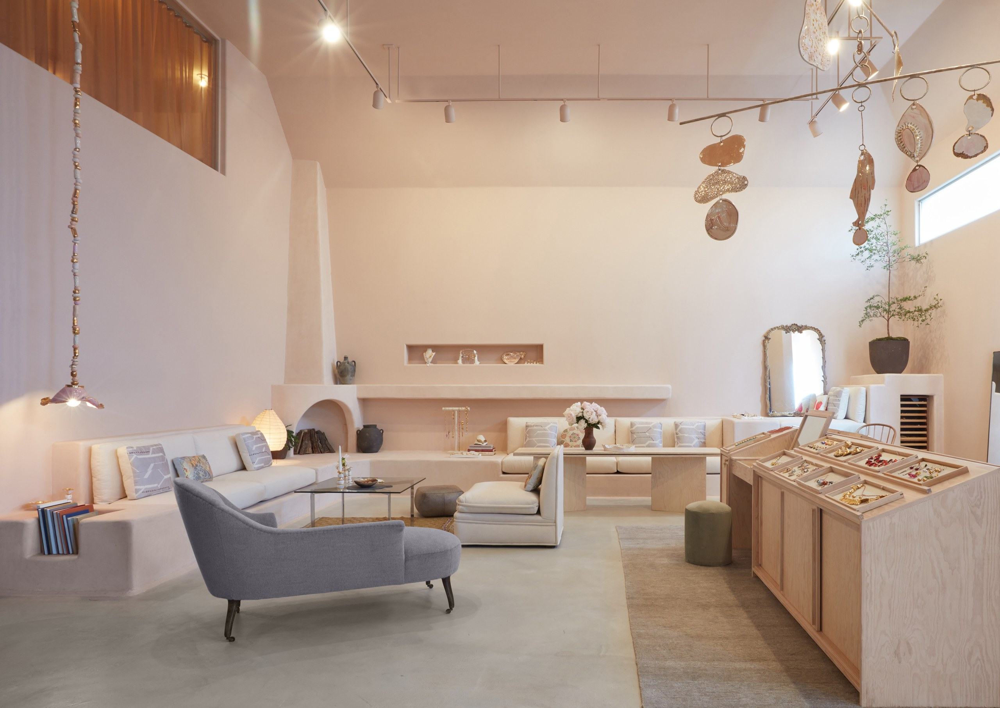
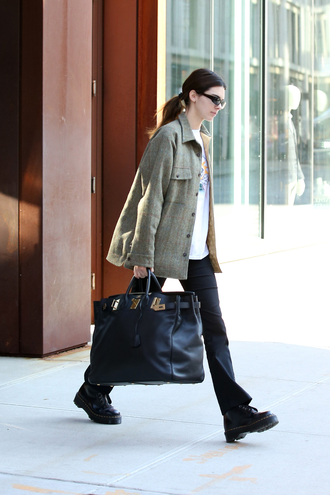

The Best Fashion Instagrams of the Week: Céline Dion, Lizzo, and More
If you are looking for a break from the cold, take a cue from Lizzo: This week, the singer headed to Disneyland in warm and sunny California. She dressed up for the occasion in pure Minnie Mouse style perfection...
If you are looking for a break from the cold, take a cue from Lizzo: This week, the singer headed to Disneyland in warm and sunny California. She dressed up for the occasion in pure Minnie Mouse style perfection, including a cartoon merch sweatshirt from the artist Shelby Swain, cycling shorts, and adorable pulled-up polka dot socks. All the way over in Montreal, Céline Dion also had quite the wardrobe moment. For a concert, the singer wore a pair of fringed, XXL-flared cowboy jeans by Ukrainian label Ksenia Schnaider. The Kiev-based designer is responsible for other viral denim creations, like her asymmetrical jeans that launched earlier this year. Fun fact: The daring Dion has worn a pair of those, too!
Of course, back in New York, there was Marc Jacobs. The designer has been having quite the year when it comes to flexing his fashion muscles on the ’gram. This week, he channeled The Wizard Of Oz with a full-green look that included some shimmery Sies Marjan pants, and a pair of platform boots to anchor the ensemble.
Another person we’ve had our eye on is model Ashley Graham, whose maternity wardrobe has been standout, chic, and fun. This past week, the mom-to-be uploaded a selfie of herself grooving in a green bodycon dress and a knotted, striped top. Graham’s celebratory dance was in honor of a new mystery project that she has coming up—but we’ll have to wait and see what that endeavor is all about.
Until then, see the best fashion Instagrams of the week.
Last updated 3 mins ago

Inside Jewelry Designer Sonia Boyajian’s Dream of an L.A. Store
Sonia Boyajian is an unusual breed of artisan. An unapologetic maximalist, she’s long favored statement jewelry and expressive hand-craftsmanship that’s elusive in the category.
Sonia Boyajian is an unusual breed of artisan. An unapologetic maximalist, she’s long favored statement jewelry and expressive hand-craftsmanship that’s elusive in the category. So as the pendulum swings back in the favor of bold baubles, as seen on the Spring ’20 runways of Gucci, Brandon Maxwell, and Ulla Johnson, among others, it seems apt that Boyajian is unveiling a Los Angeles flagship. Tucked away on La Brea Avenue, the unadorned storefront belies the compelling artistry happening within its four walls—a window into the fantastical world that Boyajian has created.
When Boyajian began outgrowing her former Hollywood workspace, and decided it was time for a retail venture of her own, she turned to longtime friend Pamela Shamshiri of Studio Shamshiri, whose notable work with designers includes Irene Neuwirth’s Melrose Place jewel box. Boyajian and Shamshiri took cues from Georgia O’Keeffe’s Santa Fe studio (with subtle nods to Donald Judd), replicating the colors, textures, and angles, sometimes to exacting detail. The six month project was truly collaborative. “The storyboard they presented to me was my jewelry as fixtures and reimagined as elements throughout the space: door knobs, sconces, pendants. They wanted to use it all,” Boyajian says. “They added such a sense of refinement to my kookiness.”
Sonia Boyajian
Sonia BoyajianPhoto: Courtesy of Sonia Boyajian
The cavernous space, which spans over 5,000 square feet, features ample showroom and studio space in which Boyajian can both work and entertain. Awash in soothing blush tones, the front room boasts sky high ceilings from which a custom-made Calder-like mobile and one-of-a-kind light fixtures and pendants hang, all of which were created by Boyajian to mimic some of her more elaborate designs. Jewelry is carefully merchandised in cubby holes dotting the walls above custom built-ins and seating that mimic O’Keeffe’s own studio benches, down to the fabric. Boyajian even made the ceramic and white porcelain trays, animal figurines, and ring holders that accessorize the space and bring an intimate feel to the oversized setting.
The square footage of the studio has afforded Boyajian the luxury of bringing every last step of her creative process under one roof. Downstairs, at the far end of the space sits her ceramic studio with two kilns, where all of her pieces get shaped, baked, and glazed by hand. They then travel up a curving flight of stairs to her lofted workspace, which is broken out into equal parts work stations and archival display. The small room where she welds, carves, and assembles the individual parts she’s created sits just across from the room that now houses her expansive 18-year archive.
Boyajians jewelry on display
Boyajian’s jewelry on displayPhoto: Courtesy of Sonia Boyajian
“When I shop for something I want to know who made it, how it’s made, and where it’s made,” she says. “So I think it’s important that my customer sees that we’re making it right in back and upstairs, and that my customers can come into the ceramic studio.”
Last updated 3 mins ago

Kendall Jenner Pulls the Celebrity-Approved “Casual Birkin” Move
Call Kendall Jenner the queen of the chic schlep. Yesterday in New York City, Kendall Jenner stepped out—en route to Gigi Hadid’s farm in Pennsylvania for a long weekend—lugging a Hermès Birkin bag that was the size of a small toddler.
Call Kendall Jenner the queen of the chic schlep. Yesterday in New York City, Kendall Jenner stepped out—en route to Gigi Hadid’s farm in Pennsylvania for a long weekend—lugging a Hermès Birkin bag that was the size of a small toddler. The model carried the gigantic Birkin while wearing a relatively pared-back outfit: an oversize flannel, a graphic T-shirt, and Dickies Girl pants that retail for a humble $29.99. The carryall, meanwhile, is the travel-size Birkin Hac 50 Vintage Ardennes Black Leather Weekend bag, which is currently available on resale sites for roughly $10,000 dollars.
Carrying a Birkin is a power move in itself: It’s a bag that instantly screams “made it” luxury (and possibly an off-shore bank account). Case in point? Jenner’s sister Kylie and her mother Kris Jenner clutching their matching Birkins on a private plane. But carrying a Birkin while wearing more casual attire is an even bigger power move. Look to Jennifer Lopez, who has long dressed her Birkins down with spandex and sports bras, even using them as gym bags. Back in the day, Kate Moss used a white incarnation as a diaper bag when her daughter was a mere tot. Pulling the “nonchalant Birkin” move signals that the Birkin bag with a multiple digit price tag is, well, just another bag for the wearer. Either way, Jenner’s gargantuan bag is a refreshing break from the tiny bag trend. (Unless, she's carrying a hundred micro bags inside of it?) A Birkin is a bag that’s in it for the long haul—far beyond a weekend trip.